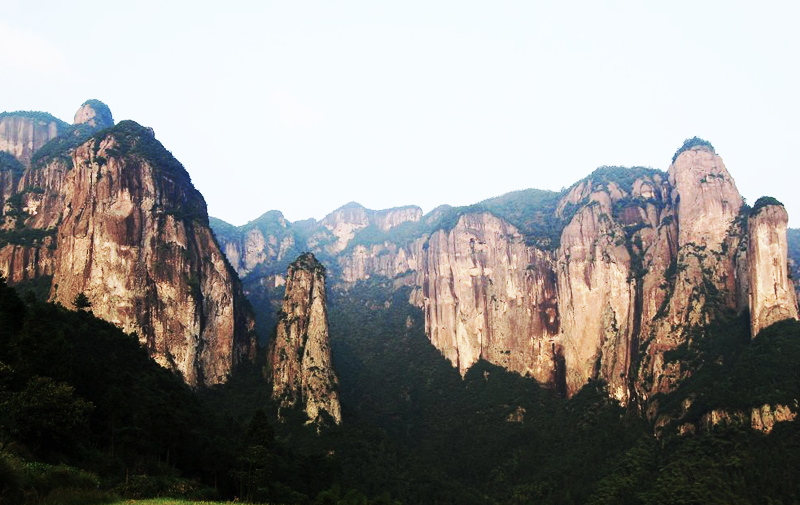

发信人: liyiren (liyiren), 信区: outdoor
标 题: [约伴]五一线路：江南的香格里拉——公盂徒步
发信站: 饮水思源 (2014年04月23日00:21:16 星期三)
screen.width - 200){this.width = screen.width - 200}">
线路简介：
公盂是近几年被开发出来的户外徒步线路，不同于较为出名的徽杭古道等线路，公盂旅游
开发的痕迹很少，村落保留原始的风格，虽然名气不大，但是景色却非常美丽，被驴友们
称为“江南的香格里拉”。除去奇特的地貌带来的奇特景色之外，公盂另一个亮点在于途
中有一段需要布绳向上攀登的陡崖，惊险刺激但依赖绳索也安全可靠。它的地理位置距仙
居县城38公里的西南处，四面奇峰环绕，峰顶海拔在1000M上下，村庄被山峰围成了一个小
小的盆地，面积约有31平方公里。岩崖峰岗变化万千，以巍峨著称。地形构造呈多级梯状
，整个公盂岩巍峨鼎立，气势峥嵘，石林崖壁，各有风采。
声明：非野协官方活动，由野协毕业校友召集，除了在校学生，也欢迎研究生及毕业校友
参加
线路强度：★★
线路难度：★★★
风景指数：★★★★
趣味指数：★★★
出行时间：5月1日下午至5月3日
详细内容请点击公共主页日志
http://page.renren.com/601632842
或者关注微博@毕业旅行了么 了解
P.S.最早发布日志与微博中订金账号有误，现已做修改，以现在人人公共主页日志以及微博日志为准，造成不便敬请谅解！谢谢！
screen.width - 200){this.width = screen.width - 200}">
screen.width - 200){this.width = screen.width - 200}">
 screen.width - 200){this.width = screen.width - 200}">
--
※ 来源:·饮水思源 bbs.sjtu.edu.cn·[FROM: 114.86.234.47]
※ 修改:·liyiren 于 2014年04月24日01:20:29 修改本文·[FROM: 114.86.234.47]
|